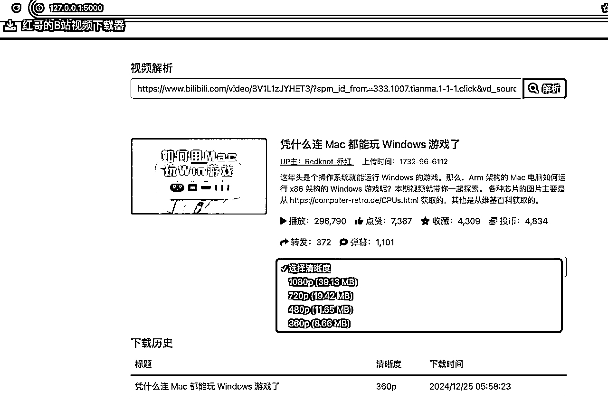
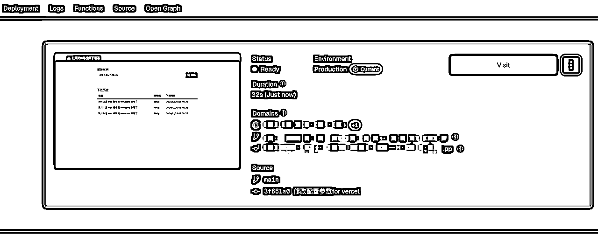

来源：https://jhsbi41509.feishu.cn/docx/SSVodgmrNohfOJxe3mYcrydZn4f
生财圈友们，我是红哥Frank，一名资深项目经理，不懂代码开发，没有编程经验，却是AI编程的爱好者，很荣幸11月刚成为生财传术师。最近参加了【Cursor-零基础做软件应用】12月航海。这个航海，我是以志愿者身份参与的，能看到很多船员的情况，确实遇到了一些实操的问题。我作为志愿者，也帮助过自己的一些船员。在海伦领队的邀请下，让我做一下Cursor的实操分享，给船员们一些信心（我也是零基础的，以前没有编程经验），因此有了这篇帖子。
下面将详细展示，我用Cursor 0代码编程实现B站视频下载，并部署到服务器，全过程实操细节都有，我相信，可以给要学Cursor的生财圈友们更多信心。相信你们看完能做出来这个应用。你能做出来这个应用，就可以做出来更多的应用。
看下图，是一个B站视频下载的界面，实现的功能点，主要有3个:
1、对B站视频URL进行解析，获取视频参数信息：
用户可以输入B站视频的URL，点击【解析视频】，会给用户展示B站这个视频URL的视频信息，比如上传时间，Up主，点赞数，投币，收藏数等字段信息。
2、用户可以选择下载的分辨率。
3、用户可以点击【下载视频】按钮，下载这个视频。
4、可以看到下载历史
在我们电脑上，新建一个空的文件夹，比如叫做bilibili-download，未来我们在这个目录下用Cursor写代码。
运行Cursor软件，点击Open a folder，选中我们刚新建的项目文件夹bilibili-download，然后点【打开】，截图如下：
大家看到是这样子界面就OK，左上角只有一个大写的BILIBILI-DOWNLOAD ，啥也没有。对，就是这样。
使用Cursor开发软件应用，最重要的工作，就是描述我们的实际需求。
下面，是我做这个B站视频下载工具的需求描述，供你参考。（不一定按照我的，这个不是固定的，可以根据你自己的需求来写）
你可以先用txt,word,飞书,微信等提前写好。
我想做一个在线的B站视频下载的工具网站，主要功能点如下：
1、当用户打开网址，并在输入框中，输入https://www.bilibili.com网站的视频文件URL地址，点【解析视频】的按钮之后，你可以解析出一些视频的参数信息，我需要的参数有：封面大图，视频标题，视频描述，上传时间，Up主，视频分辨率，文件大小，播放量，点赞数，收藏数，投币数，转发数，弹幕数等字段。我需要你同时展示这个字段的名称，和对应的值。比如，上传日期：2024-11-18。字段名称在上边，字段的值，显示在下面。最好表格的形式，帮我呈现。每个字段前面，需要有一个小图标，这样子比较美观。
2、用户可以选择下载视频的分辨率，所以你要帮我做一个可用清晰度的下拉列表，让我决定要下载什么分辨率的视频。
3、下载视频。【解析视频】成功后，用户可以点击按钮，按钮名称为：下载视频，系统开始下载视频到本地电脑。在下载的时候，需要有：实时的下载进度更新的状态条。当系统下载成功后，给用户一个提示：下载成功。另外，我希望展示历史下载记录。
4、网站html页面的title，我希望你帮我命名为：红哥的视频下载器。
3、网站页脚footer区域，我希望展示一行文字：© 2024 红哥的视频下载器，仅供学习使用，联系人：红哥，邮箱：hong420802#gmail.com
4、整个页面，我需要你帮我设计成响应式，可以自适应各种屏幕大小，前端框架我期望你用bootstrap。
5、我是一个0基础用户，以前没有代码编写的经验,我使用的Mac电脑，我希望你先理解我的需求，并规划实现的技术架构，给我一些建议，方便我们来沟通需求，文件输出到：bilibili-download文件夹的Readme.md文件中。
接下来，我们把上一个步骤写好的需求描述进行复制，发送给Cursor的chat窗口，让Cursor帮我们完善需求，形成项目的Readme.md文档。
咱们可以看到，Cursor给我们输出了Readme.md文件，详细的对这个项目做了介绍，并推荐了技术方案。
这个地方内容比较长，Cursor没有自动的在bilibili-download项目下新建，那我们采用手工新建，并手工把Readme.md的内容复制进去，保存就行。
我们在Cursor编辑器右侧，切换到Compose模式，输入我们的需求给AI：
@ Readme @ Codebase 这是我的B站视频下载的需求说明书Readme.md，请你理解我的需求，并帮我实现。
上面内容输入完，按回车，稍等一会，Cursor会自动写代码，自动创建文件，右下角出现【Accept all】，我们点击【Accept all】接受Cursor的修改。
然后，我们看看如何运行这个项目。在我们上边让Cursor生成后，有关于运行这个项目的操作步骤说明。我们跟着操作一下。
确保已安装所有依赖： pip install flask yt-dlp requests

我们在浏览器输入：http://127.0.0.1:5000/ ，效果如下：
创建项目目录结构：
mkdir -p bilibili-download/{static/{css,js,img},templates,database}
我找了一个B站视频，输入后，按解析，报错了。
报错信息，直接在Compose窗口发过去，然后accept all.
[0;31mERROR:[0m [BiliBili] BV1L1zJYHET3: Requested format is not available. Use --list-formats for a list of available formats
我们在刷新一下，效果如下：
我随便找的B站视频url: https://www.bilibili.com/video/BV1L1zJYHET3/?spm_id_from=333.1007.tianma.1-1-1.click&vd_source=9b4215a6fed2d68ee59316b639bf92d2
后续修Bug的，我会一直用这个URL，方便大家看前后的效果。
看到有一些小问题：
1、视频封面没有显示出来，看我的截图。
2、解析的字段，只有2个：播放和点赞，和我们需求比起来，字段少了。我们需要解析的字段是：封面大图，视频标题，视频描述，上传时间，Up主，视频分辨率，文件大小，播放量，点赞数，收藏数，投币数，转发数，弹幕数等字段。看我的Readme.md的需求描述。
下面我们先关注一下核心功能，下载视频是否OK。
我们先来测试下，点击下载，不一会，下载成功，并提示，下载历史记录，也给我记录好了。如下。
OK，那下载视频，下载历史记录，一次通过。我们来优化一下刚前面提到的小问题。
将页面截图粘贴到聊天窗口，并把我们上面的问题描述发给Cursor.
我们等Cursor执行完，Accept all。再次测试一下。
哦豁，Cursor一通修改，现在页面打不开，后端日志一直都是，"GET /static/img/default-thumbnail.png HTTP/1.1" 404 - 。
丢给AI。
Accept all。
但是我们发现，没给我自动创建img目录。
所以，我们需要手工创建一下 img目录，并创建一个create_default_thumbnail.py文件，内容直接复制，保存。
然后把Compose没有自动执行的命令，手工执行一下。
再来测试一下，又报错了。
报错信息：
'<' not supported between instances of 'NoneType' and 'int'
将问题发给Cursor，等他处理，然后Accept all。
测试一下，多了一些字段的显示了，部分字段没获取到值，另外封面没有显示出来。
我们继续问AI来解决。
还是有问题，1、视频封面图没有解析并正确显示出来 2、有几个字段没有值，是0，实际视频URL是有值的，我测试的URL是：@https://www.bilibili.com/video/BV1L1zJYHET3/?spm_id_from=333.1007.tianma.1-1-1.click&vd_source=9b4215a6fed2d68ee59316b639bf92d2
测试一下，解析的字段OK了，但是那个封面图，还是不OK呀。
我们接着问AI。
我现在解析视频的字段信息OK了，但是那个视频封面的图，在前端没有展示出来，请看给你的控制台的错误信息，缩略图是 main.js:89 Failed to load thumbnail: http://i0.hdslb.com/bfs/archive/2838d3453555136abd5db2dae2602ec44b2cb319.jpg ，请分析，并修复
OK，这次Cursor说给我用了代理接口来获取和显示图片，说应该OK了，我们来测试一下。
刷新页面输入URL，按解析，效果如下，OK，太棒了，显示出来了。
我们再来整体测试一遍完整功能。
选下载清晰度，没有文件大小。我们让AI修复一下。
再次测试一下，解析视频，参数信息正常，封面图正常，清晰度选择，文件大小选择，均正常。点击下载测试一下。

下载成功，下载历史记录也有。
整个测试下来，功能没任何问题。
回顾一下，这个过程，AI一次性生成代码，启动遇到了3个问题，页面加载出来，修复视频封面的显示，修复一些字段没解析出来的问题和文件大小没显示的问题。总共对话应该在10多次就搞定了，大概半个小时。
Git是一个代码版本管理软件，用来管理我们的代码。这个部分，我来分享一下如何把我们的代码，推送到Github代码仓库做备份。这个还是非常重要的，Git提交，你可以简单理解为电脑的备份。当你本地代码环境有问题，可以用Git的备份来还原。
怎么用Git，我们来问一下AI。
我现在需要把代码同步到Github，我要怎么做，请一步一步教我
OK，下面我就来实操，一步一步按AI给我们的教程实操起来。
网址：https://github.com/ 。如果你没有账号，注册一个。（这个步骤非常简单，这里点到为止）
登录Github之后，点击右上角的 "+" 按钮，选择 "New repository"。输入仓库名字，选private，保存即可。详细见下面的截图

点击Create repository后，就看到下面的界面，代表Github仓库建好了。
注意：
1、如果你不希望你的仓库被所有网络上的人看到，你可以选：Private。
2、如果你希望所有人都能访问你的仓库，你可以选：Public。
我们在项目根目录下打开终端，运行以下命令以初始化 Git 仓库（如果还没有初始化）：
git init
截图如下：
这个步骤，我们将在本地电脑的项目目录下编，将刚刚创建的 GitHub 仓库添加为远程仓库。
# 添加远程仓库（将 YOUR-USERNAME 替换为你的 Github 用户名） git remote add origin https://github.com/YOUR-USERNAME/bilibili-download.git
我的Github用户名为frank202020，仓库名是：bilibili-download，我们把上面的命令对应改一下就是：
git remote add origin https://github.com/frank202020/bilibili-download.git
将所有文件添加到 Git 版本控制中：
git add . // 意思是把本地代码放入到暂存区
命令：
git commit -m "第一次提交，实现B站视频解析与下载"
引号里面的内容，自己根据实现了什么内容来填写。
将本地代码推送到 GitHub 仓库：git push -u origin main
我们到Github看看，在Github，这个bilibili-download仓库下，代码都有了，commit提交的内容都有。搞定。
git clone https://github.com/用户名/仓库名.git
比如，克隆我的bilibili-download仓库代码： git clone https://github.com/frank202020/bilibili-download.git
git branch -a // 查看所有分支 git checkout -b 分支名称 git push -u origin 分支名称
下面是一个操作实例，供你参考。
有时候，本地代码需要更换一个仓库，需要涉及到移除之前的远程仓库。
操作方法如下：
查看当前远程仓库： git remote -v 移除远程仓库： git remote rm origin 添加新的远仓库： git remote add origin 新仓库地址 验证是否移除成功： git remote -v # 如果没有输出，说明已经成功移除
下面是我之前开发遇到的，要本地强制更新远程仓库的代码，以本地的代码为准，我用Cursor给的教程，整理如下，如果你有一样的场景，可以照着操作。
如果你确定要用本地版本覆盖远程版本，可以强制推送（谨慎使用） git push -f origin main
建议完整的操作如下：
# 1. 先获取远程更新 git fetch origin # 2. 合并远程分支 git pull origin main --allow-unrelated-histories # 3. 解决冲突（如果有的话） # 编辑冲突文件... # 4. 提交更改 git add . git commit -m "Merge remote changes" # 5. 推送到远程 git push -u origin main
这个的使用场景是，本地代码，用Cursor做着做着，把以前做好的功能都搞坏了，一直修复不了。我们可以获取仓库的最新的代码，然后进行重制操作，这样本地就恢复到和Github提交的版本一致。这样我们又可以基于之前做好的版本，重新来做新的功能开发。
git fetch origin # 获取远程仓库的最新内容 git reset --hard origin/main # 执行重置操作
划重点：
本地做好的功能，一定要及时提交Github备份一下。未来你才有恢复一说。
如果你想部署到自己的云服务器，可以用宝塔面板，这个对新手比较友好，这个Cursor教练也提到过这个。
下面说一下，我是买的腾讯云服务器宝塔面板，服务器购买完成，就预制装好了宝塔面板。
如果你买的其他服务器没有装宝塔面板，可以直接问Cursor，我的服务器要安装宝塔面板，请一步一步指导我即可。
宝塔面板的安装过程我就不贴图了，大家可以自己动手操作起来。
在根目录www/wwwroot下，新建一个文件夹，命名：bilibili-download，与我们本地的项目文件夹一致。
OK，解压好之后，这个新建的bilibili-download文件夹就是我们本地上传的项目代码了。
我们的项目是一个Python项目。点宝塔面板左边菜单： 网站---Python项目---添加Python项目。
在添加这个页面，注意一些配置项的填写，如果第一次操作，可以参考我的截图的配置。
接着，如果项目没有启动，我们手工点一下启动。
我们应用的端口是5000，需要放开端口，互联网上的用户才能访问到。
下面的步骤，是腾讯云服务器的后台截图。如果你用的是其他的云服务器，可以问Cursor解决。
在宝塔面板，网站---点项目名称----域名管理----添加域名。
进入的域名注册服务商后台，域名管理，找到你的域名。
点击添加记录，创建2个A记录，
主机记录：@ 记录值：你的服务器IP
主机记录：www 记录值：你的服务器IP
这样域名解析服务器IP就搞定。
下面的截图是我的阿里云域名的解析配置界面，仅供参考。其他的域名厂商的配置，都一样的操作。
到这就完事了，测试一下 域名:端口访问项目。
访问完成，测试功能也OK。 （备注：我的腾讯云服务器备案中，域名解析被要求停止了，只能偷偷的用IP访问）
如果你没有购买服务器，或不想用自己的服务器，你可以尝试把你的本地应用，部署到vercel.com ，去做MVP的测试，没有任何的服务器成本。
当我们的本地应用开发刚完成，我们提交Github备份一下。但是要发布到Vercel.com ，我们需要问一下Cursor，我们还有哪些工作要做，它会回答你。
问：
我的项目代码开发完成了,我想部署到vercel.com，我还需要做哪些工作，请一步一步详细的指导我完成
# 在项目根目录执行
pip freeze > requirements.txt
然后Apply创建vercel.json
OK ,我们重新来同步代码到Github。

在浏览器中输入：www.vercel.com ，登陆自己的账号。如果你没有vercel账号，可以自己注册一个。（这里就不讲注册vercel账号哈）。注册vercel也是可以问Cursor，让它一步一步教你。
进入vercel.com之后，点右侧：Add New ----- Project ,
你会看来的一个弹出框： Import Git Repository。
输入我们的项目名称：bilibili-download，搜索一下。会弹出Config Github App
输入Github的密码，我们对Vercel 进行授权访问的我们的Github仓库。
看下图，我选的是 Only delect repositories，下拉，选到我们前面新建的仓库名字：bilibili-download，点Save保存。
点击我们仓库bilibili-download右侧的【Import】按钮，进行导入。
这个界面，我们什么都不用改，直接点Deploy即可。

稍等一小会，vercel就会部署完成，Status会变成绿色，会显示它分配给你的域名，你就可以访问项目了。
如果你看到是绿色的Status，且看到网页的预览图，那么恭喜你，部署成功啦。

否则会报python命令不存在，版本不存在等各种错误。（其实都装过，在虚拟环境中。）
cd bilibili-download //进入到你项目的目录
source venv/bin/activate // 激活虚拟环境
python app.py // 启动Flask服务器
航海过程，我发现挺多人本地问Cursor是会的，但是，部署到服务器，很可能会存在报错，却不会了。
你可能会经常抱怨，本地运行都好好的，部署到vercel或服务器，总有一些奇怪的问题。我觉得这个是正常的，不要过于焦虑，平常心即可。我也遇到过这种问题，不可避免，大部分时候，都是环境和依赖的问题。记得看vercel的runtime log，然后丢给本地电脑的Cursor帮你去解决就好。
如果有具体的日志，我们可以把日志给Cursor，会给我们具体的解决方案。
（下面这个是我在部署服务器遇到的 WSGI和requirements依赖没装好）
另外，新手部署服务器，可能会经常遇到网页打开出现502，ngnix起不来，网站403 forbidden，这种多半是nginx的配置问题。因为这些我在部署到服务器的时候，都遇到过，一度让我排查的想死。不过，好在有Cursor，你要把Cursor作为你的程序员朋友一样，把相关的日志反馈给它，它会指导你解决。
当你在本地做好应用，阶段性的做好一个页面，做好一个按钮或某个小的功能优化，要养成经常性的提交一下Github备份，就和我们在用office写文档，习惯性的保存一样。避免后面Cursor给你做着做着，bug修复不好了。如果有备份，这个时候可以直接拉取代码恢复之前提交的版本。
总之呢，AI编程遇到的99%的问题，只要你学会问AI问题，多半都能给你解决。
就我个人学习Cursor以来，99%的问题，确实都帮我解决了，只是花的时间长短，快慢的问题。对于新手而言（我也是新手），整个解决问题的过程，会有点折磨人的。
因此，需要我们要有非常好的心态，强力的心力。面对问题不要慌，不要放弃，勇敢去面对和解决。累了就休息，放松一下，重新再来攻克它。
感谢此次的Cursor航海，海伦领队，让我写这个船员分享，才有了这篇帖子。
感谢Cursor航海的各位教练们，特别是大铭教练，michael教练，从你们的高手领航，日常点评或分享，学到了一些新的知识。最经典的就是，我们要和AI协作，不要让Cursor成为我们的外包，要让他成为我们的同事，让它帮助我们生长代码，而不是生成代码。
也感谢阿紫教练呀，算是我的Cursor启蒙老师，看了一篇你的贪吃蛇教程，从此就爱上了Cursor。
最后，祝大家一起生财有术，一起来学AI编程呀，这个玩意真的上瘾。
期待大家一起沉迷Cursor，沉迷AI编程做应用，去创造属于自己的产品应用，提升自己的工作效率，或实现商业上的变现。